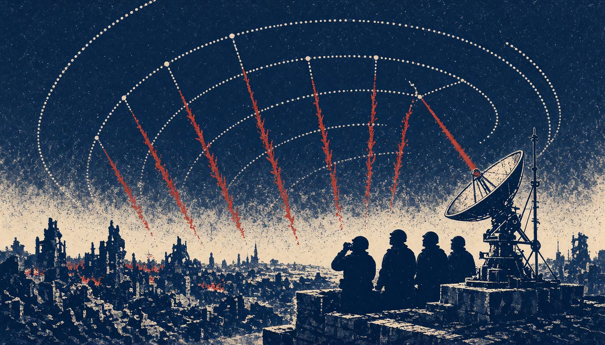

105 US lawmakers demand answers over Starshield restrictions in Ukraine
Ukraine says the limits disrupted its drone interception system and began as Trump's envoys prepared to meet Putin. The Commission has called for urgent restoration of full service.

105 members of the US House of Representatives have demanded a full accounting from the Trump administration and SpaceX on why Starshield was restricted in Ukraine. They also want action to restore full access. A Ukrainian official said the limits grew over three days, from 10 percent of missions failing to half, then all of them.
The European Commission reacted with concern. Its spokesperson for defence and space affairs, Tom Renier, called the reports of Starshield disruptions unacceptable if confirmed. He said the services must be restored urgently for Ukraine. In October, during the earlier restrictions, Elon Musk said on X the United States controls who can access Starshield and what level of service they receive. "Any limits on speed or usage are decided by the US military and ultimately POTUS," he wrote.
President Volodymyr Zelensky said the speed restrictions are helping Russia kill more Ukrainians with more accurate strikes. "Unfortunately, this is helping the Russians kill more Ukrainians and carry out more accurate strikes against Ukraine," he said. He told Axios the limits began shortly before President Trump's envoys met Russian President Vladimir Putin at the Kremlin on Thursday. The envoys were Jared Kushner and Steve Witkoff, Trump's Middle East envoy.
Nine senators, including four Republicans, wrote to the Defense Department inspector general on 15 October. They asked for an immediate investigation into the sudden drop in Starshield and Starlink speeds in Ukraine. The inspector general refused, saying in its answer that the matters raised were best addressed by the Defense Department itself. The refusal concerned disruptions to SpaceX's satellite internet service to Ukraine that began in early October.
Ukraine's Ministry of Defence recorded Starlink and Starshield speeds as restored in late October. The government says new restrictions have since disrupted the system its military uses to intercept Russian drones. "We don't have clarification from SpaceX or Pentagon at the moment," Ukraine's chargé d'affaires in Washington, Denys Sienik, told Axios. President Zelensky said Defence Minister Yevhenii Khmara and Armed Forces Commander-in-Chief Mykhailo Drapatyi were in contact with the US side.